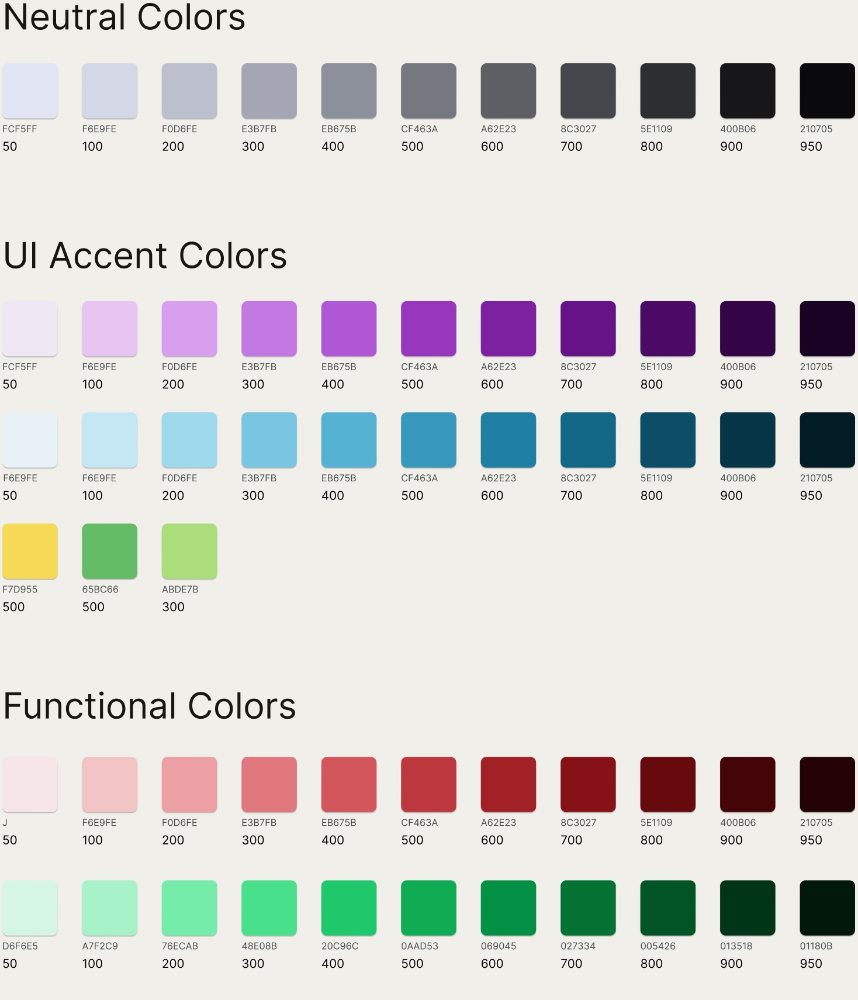
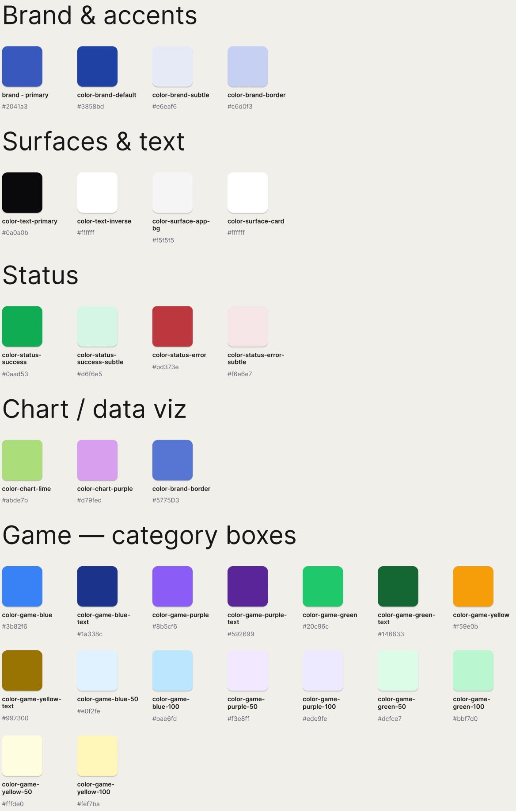
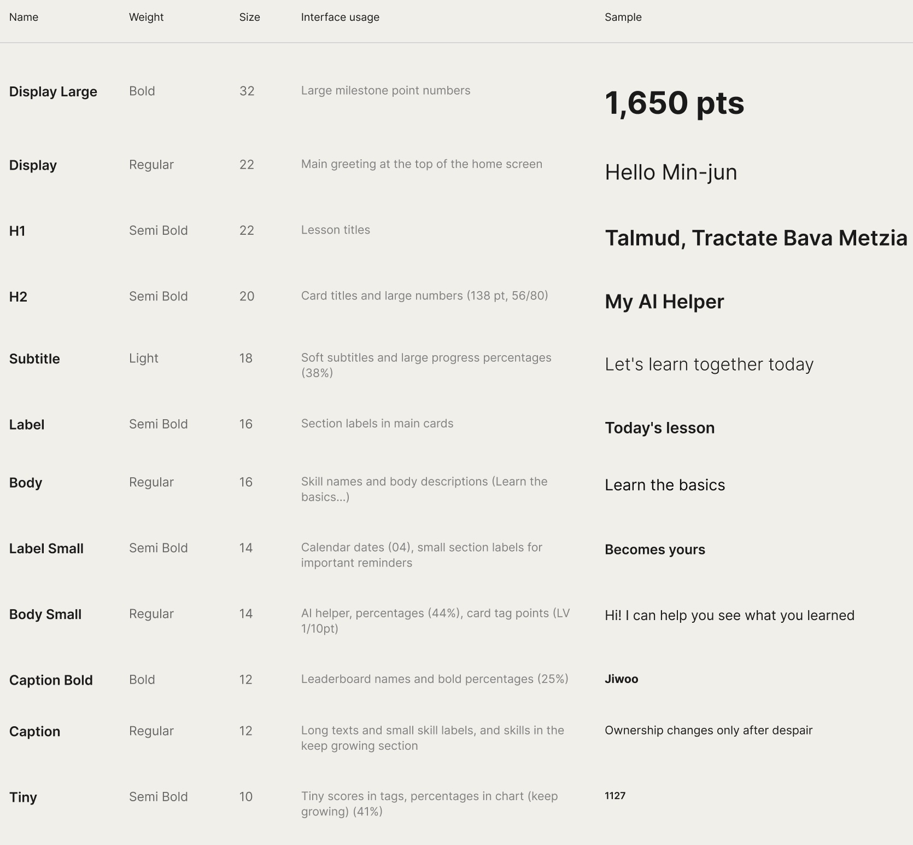
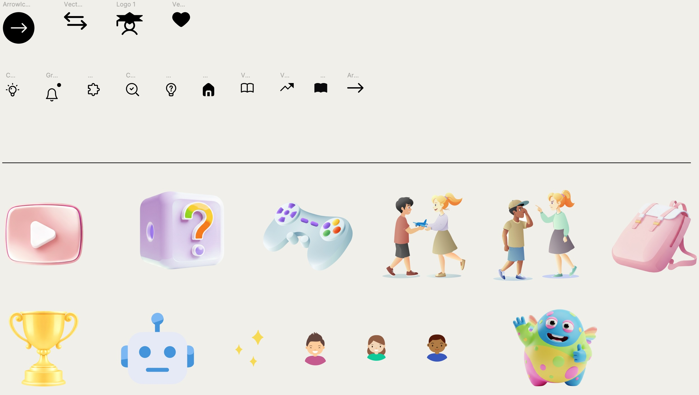
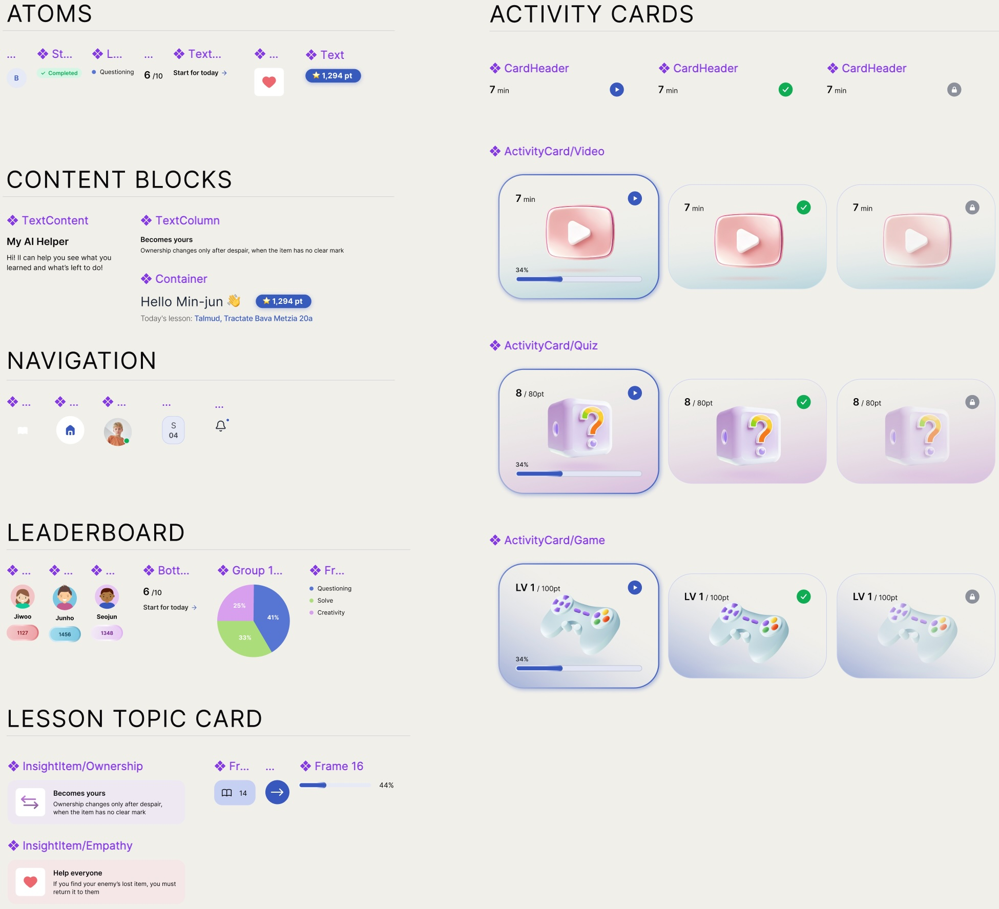
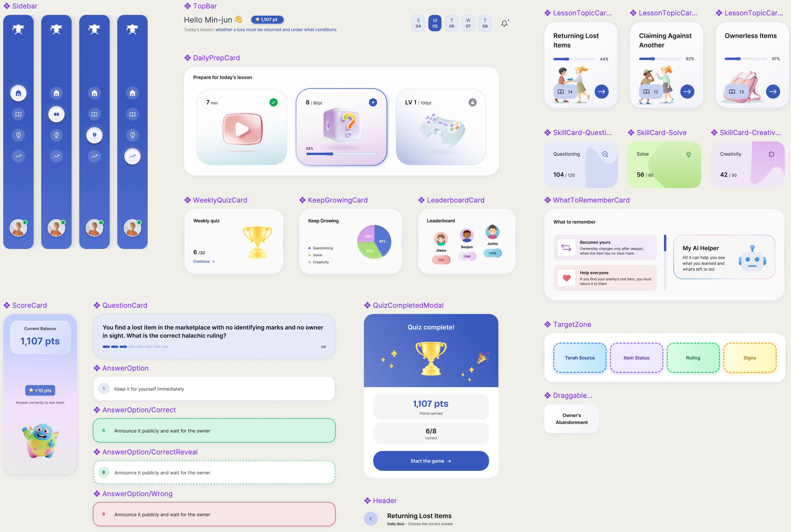

Talmind Design System — from 72 base tokens to a full product
A design system built to extend

Design System
Colors
Colors were built as Figma Variables, not plain styles. This lets a semantic layer
(--color-brand-default) reference a primitive (brand-500) instead of hardcoding it.
Change the primitive once, and every screen using that semantic token updates automatically.

Semantic tokens
A semantic token is a name that describes a color's role, not its value — like
--color-brand-default instead of a raw hex code. Each one maps to exactly one primitive:
--color-brand-default is always brand-500, everywhere it's used.

Typography

Icons & illustration

How a single atom becomes a whole system
Components build in layers: primitive → component → screen template. The DailyPrepCard's three lesson-prep tiles, for example, share a single primitive with defined states (done, in-progress, locked) — change the primitive once, and it updates everywhere.
When the flow needed a new state, I added it as a variant instead of a new component. It inherited the existing typography, spacing, and color tokens automatically, with zero changes to screens already built.
Primitives. Atoms and small building blocks — badges, text styles, nav items, the InsightItem, and the three ActivityCard states (Video / Quiz / Game) with their progress, done and locked variants.

Composed components. The primitives assembled into screen-level pieces used across the product.

Handed off to developers, not just to myself
I built a separate Handoff page that documents the system in the language a developer needs — not just "here's how it looks," but exact tokens, states, and edge cases. It includes a component inventory with variants and states per component, and a motion table with exact duration and easing values instead of "there's an animation."
Component inventory 15 components · where each is used, its variants, and the implementation note that travels with it
| Component | Used in | Variants / states | Implementation notes |
|---|---|---|---|
| Sidebar | All screens | DefaultActive item | Fixed rail; icon + active pill; avatar with presence dot pinned to the bottom. |
| TopBar | Home | Default | Greeting + points badge + week-day selector + notifications bell. |
| Header | Quiz · Lesson | Default | Back button + title + subtitle; reused on every drill-down screen. |
| DailyPrepCard | Home | Default | Wraps three ActivityCards (Video → Quiz → Game) as the 3-step prep flow. |
| WeeklyQuizCard | Home | Default | Trophy + progress "6 / 30" + Continue link. |
| KeepGrowingCard | Home | Default | Skill pie (Questioning / Solve / Creativity) with legend. |
| LeaderboardCard | Home | Default | Top-3 avatars + score pills. |
| LessonTopicCard | Home · Lesson | In progressComplete | Title + progress bar + illustration + arrow; percentage drives the bar. |
| WhatToRememberCard | Lesson | Default | InsightItem list (Ownership / Empathy) beside the AI-helper panel. |
| SkillCard | Lesson | QuestioningSolveCreativity | Metric "104 / 120" + tinted blob; one variant per tracked skill. |
| QuestionCard | Quiz | Default | Prompt + step dots (3 / 8); composes four AnswerOptions. |
| AnswerOption | Quiz | DefaultCorrectCorrectRevealWrong | One primitive, four states — drives every piece of quiz feedback. |
| ScoreCard | Quiz | Default | Current balance + "+10 pts" chip + monster mascot. |
| DraggableCard | Game | IdleDraggingPlaced | Concept chip dragged into a TargetZone; shadow lifts while dragging. |
| TargetZone | Game | Torah SourceItem StatusRulingSigns | Dashed category box; accepts DraggableCards; colour bound to its category token. |
Motion & animation every motion documented with its trigger, duration and easing — not "there's an animation"
| Element | Trigger | Duration | Animation & easing |
|---|---|---|---|
| Page — app frame | On load | 600 ms | Fade + scale-in 0.98 → 1 · cubic-bezier(.2,.7,.2,1) |
| Page — content blocks | On load (stagger) | 500 ms · 60 ms step | Fade + rise 16 px → 0 · ease-out |
| Page — exit | On route change | 300 ms | Fade + rise 0 → −12 px · ease-in |
| Sidebar nav item | On select | 250 ms | Active pill slides + icon tint crossfade · ease-out |
| Back button | On press | 200 ms | Tap scale 0.94 + arrow nudge −3 px · ease-out |
| Points badge | On points earned | 600 ms | Count-up + pop 1 → 1.12 → 1 · cubic-bezier(.34,1.56,.64,1) |
| "+N" fly chip | On correct answer | 900 ms | Chip flies AnswerOption → points badge · cubic-bezier(.2,.72,.2,1) |
| Monster — idle | Ambient loop | 7 s · infinite | Gentle float translateY ±13 px + scale · ease-in-out |
| Monster — happy | On quiz complete | 1600 ms | Wave rotate ±12° (keyframed) · ease-in-out |
| Sparkles | On quiz complete | 1200 ms | Twinkle scale + opacity, staggered · ease-in-out |